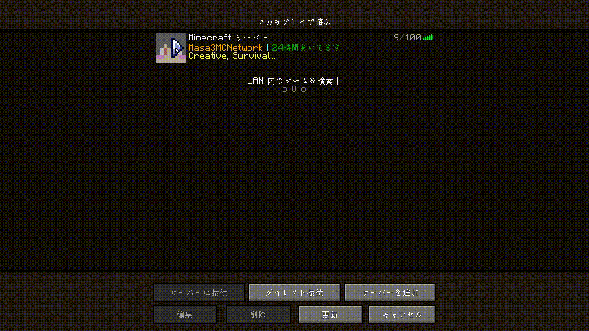

4.サーバー接続
サーバーアイコン上の三角またはダブルクリックで接続します。

5.サーバー選択
ロビー接続後、時計を右クリックして接続するサーバーを選択します。

Minecraft(Java版)1.16.3を起動します。
マルチプレイをクリックしサーバー追加前に利用規約を確認します。
適当なサーバー名とサーバーIP(masa3mc.xyz)を入力し、完了を押します。
サーバーアイコン上の三角またはダブルクリックで接続します。
ロビー接続後、時計を右クリックして接続するサーバーを選択します。